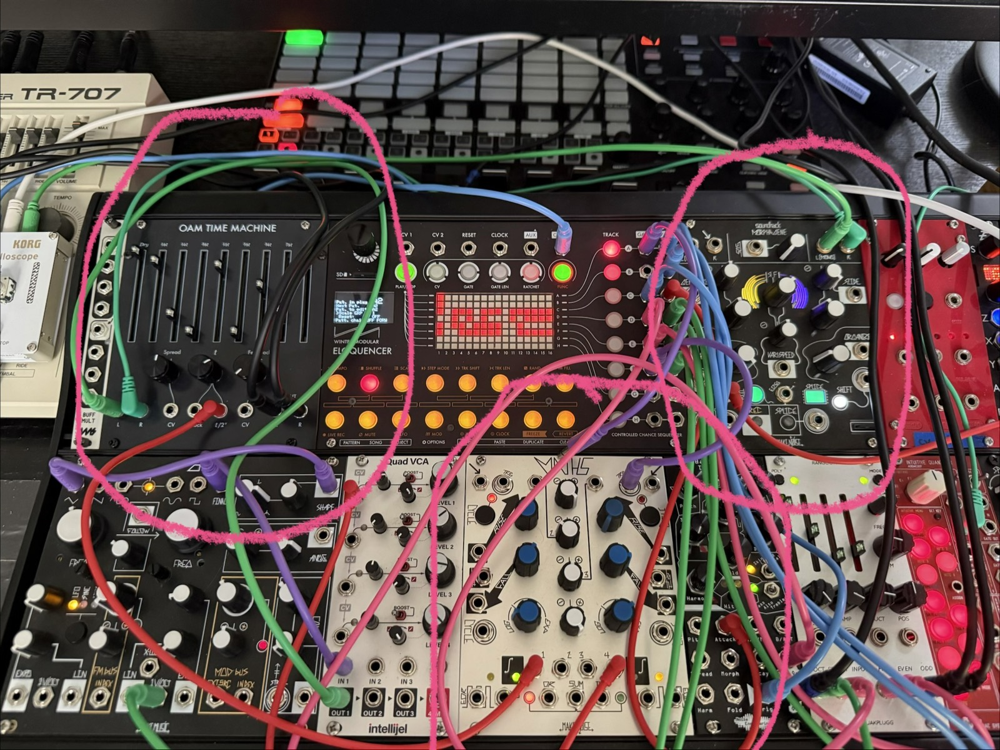

Notes
I'm working on potential tracks that could be performed live, somewhere, someday. The newest one is much simpler than some of the others I've tried, which have used the Eloquencer extensively and required a bunch of patching. I'm calling this one "Well Worn" and it just involves:
- Morphagene on the Teal reel ("Heavenly Juno pads" that I recorded from patch A87), Teal splice, routed through the OAM Time Machine in stereo. Maths provides an LFO via output 1 into the "t/2^v" input of the Time Machine
- Performance is just dialing in various combinations of:
- Gene Size, Slide, and Morph on the Morphagene
- Spread, t, and Feedback on the Time Machine
The result is a slow-evolving manipulation of the synth pad into a variety of textures and levels of granularity. Cranking Morph to 100% on the Morphagene modulates the pitch up and down through a set of ratios. The LFO from Maths gives a rhythmic texture by shaping the delay timing and acting as a kind of filter